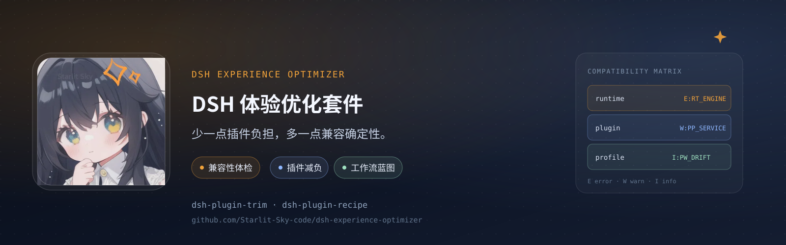

常驻成本不可见
每个 bundle 的 prompt 和工具描述都在持续消耗 token，但平时看不到占比。
DSH 插件套件 · AGPL-3.0
插件减负 × 兼容性体检 × 工作流蓝图。看清常驻上下文，再用证据决定关掉什么。
dsh plugin --profile web add dsh-plugin-trim
省略版本号即取 latest · 两个插件可独立或同时使用

问题
插件不像工具调用那样显眼。它们持续占用 prompt、工具描述和重复段落，直到某一天你发现上下文里有一大块“看不见的成本”。
每个 bundle 的 prompt 和工具描述都在持续消耗 token，但平时看不到占比。
插件↔插件、插件↔DSH、配置集/工作区之间的冲突，往往在出问题后才被发现。
知道要自动化什么，却不知道需要哪些工具、权限和人工确认点。
怎么工作
默认保守：描述匹配不单独构成“建议关闭”。定时/触发、已有调用、无账本、低置信度，都会进入人工复核。
01 / 测量
插件清单显示每个 bundle 的上下文占比；未归属部分单独标出，不硬摊给某个插件。
02 / 解释
任务相关性、使用账本、周期语义和上下文成本共同决定保留、启用、复核或建议关闭。
03 / 确认
confirm 只是提案标记；宿主审批返回 allowed-once 才写入。每次应用前先写还原点。
04 / 恢复
回滚同样需要安全确认。先小步验证，再扩大范围。
“建议关闭”的硬条件
功能
dsh-plugin-trim
上下文占比、兼容性检查、可解释的精简方案、安全确认、还原点与恢复。
dsh-plugin-recipe
把业务目标翻译成可校验、可导出的工作流蓝图，每一步都标注审批级别。
界面

边界
只读分析，不执行 !!js、不联网。
受保护 / 核心 / 预设 / 固定项永不改动。
confirm 不是授权；安全确认才是。
定时/触发、已有调用、无账本只进入复核。
安装
省略版本号即取 latest。npm i 是 npm install 的官方别名。
dsh plugin --profile web add dsh-plugin-trim
dsh plugin --profile web add dsh-plugin-recipe普通 npm 安装：npm i dsh-plugin-trim dsh-plugin-recipe
问答
默认保守：没有使用账本、任务置信度不够、带定时/触发语义，或已有调用记录时，只进入复核。
带“每月/每周/定时/提醒/日程/dream”等语义的插件会被硬保护；也可以加入 protect 列表。
每次应用前写入还原点。在界面点击“恢复最近”，或调用 trim_rollback_profile；恢复同样需要安全确认。
confirm: true 只是提案标记。宿主审批返回 allowed-once 才是授权；拒绝、取消或审批不可用时一律不写入。
关于 / 支持
AGPL-3.0 · 作者 Starlit Sky · 欢迎反馈与试用。
QQ 群：1134419871
捐赠方式：待补充
当前也可以通过反馈、文档和插件试用来支持项目。